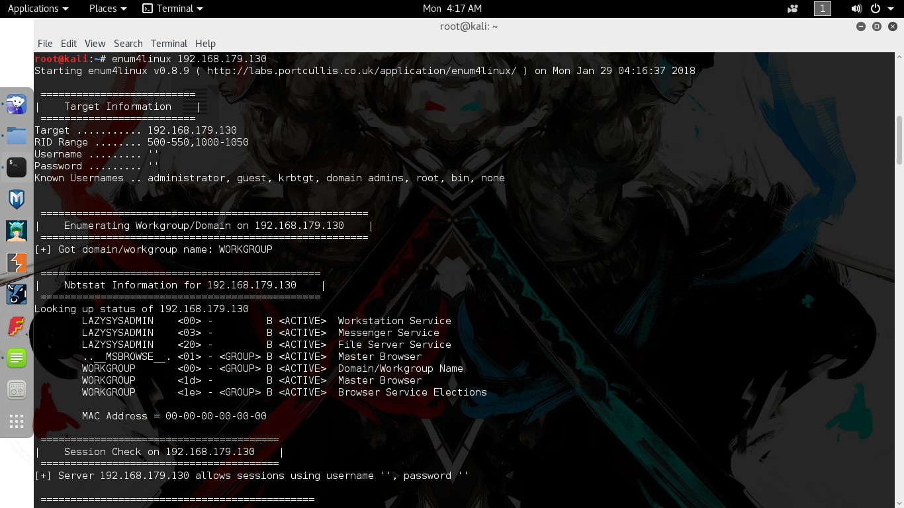
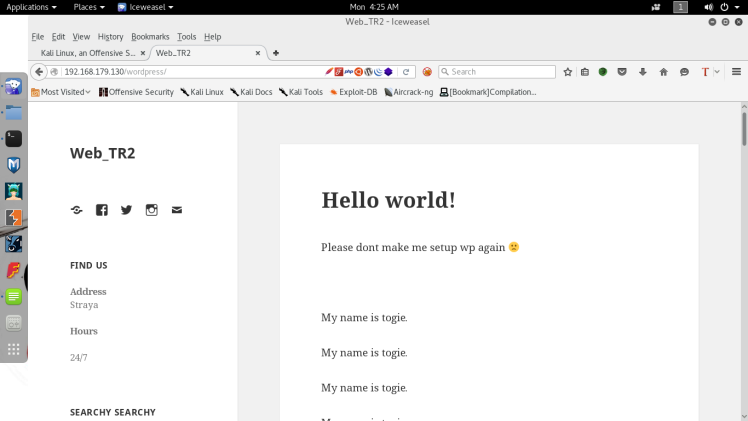
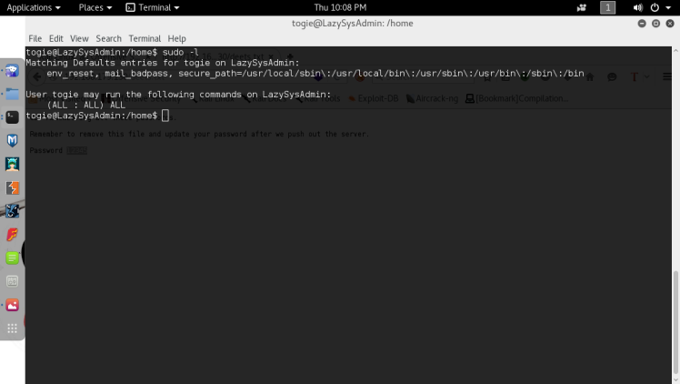

Lazysysadmin CTF WriteUp
This is my first boot2root writeup and hopefully it’s written clearly and your able to follow along. Anyway LazySysAdmin is a beginner box and if you have through enumeration tactics it should be pretty straightforward. Alright let’s get into it.
First we’ll start with a nmap scan to enumerate the open ports running on the machine.
Syntax : nmap -sV -sC -T4 192.168.179.130 
So we see it’s running a OpenSSH, Apache, Samba and a local MySQL server. Based on previous experience I’ll already cross out OpenSSH as an inital attack vector, based on it usually being pretty secure and brute forcing an ssh login is always a last option especially on most CTFs. Moving on, Apache and Samba are looking the most interesting , MySQL can only be accessed locally on the box so that’s going to have to wait. I decide to enumerate the Samba service first using the enum4linux tool.
Synatax: enum4linux 192.168.179.130 
Looking at the enum4linux scan results I saw the Samba version which was 4.3.11. It also showed some open mappings of some shares on the box. Seems the scan also found the username of a local user “togie”. Keeping that username in my backpocket I decided to look through the shares using smbclient since the share named “share$” was openly readable.
Syntax: smbclient \\192.168.179.130\share$ 
Sheesh looks like I found the web root share, which was openly accessible without a password, big mistake on the admin’s part. Now after discovering this I decided to start enumerating what I found in the share by navigating to them on the actual web server. After looking around it looked like the only interesting files were deets.txt and the WordPress folder. Most of the other folders were image folders or empty and the todolist.txt was just a message to the admin to himself saying to lock up the samba share I already had accessed. The deets.txt file ended up containing a leftover password.

Going to save it for later,could be used later for a login. Navigating into the WordPress directory, we’re greeted with a WordPress page:

Clearly this user togie is important, since he’s a local user and his name is plastered all over the front page of the WordPress site. So after seeing this I decided to try testing the user togie with the password found earlier in the deets text file on the different logins found in the box. First was the WordPress login page, however it turned out to be a dud. After that remembering that ssh was also open, I tried the same combination of credentials there and funny enough it logged me in :

We’re in but it seems that my shell is restricted. However since this ssh, a easy way to get around this is to just specify -t , which allows you to run screen commands in a pseudo tty environment, and typing bash –no profile, which disables all user configuration for bash, including the restriction settings. After this we’re welcomed with a unrestricted shell.

After this it’s time to try to escalate privilege to root. The first things I do at this stage is run sudo -l on the user I’m using , hoping for some quick wins. :

Well it looks like the user togie can run all commands with root privileges, not good practices from this admin, but it’s good for me of course. After this it’s a simple matter to gain root, just typing sudo bash should give me a bash shell running as root :

There we go, root!